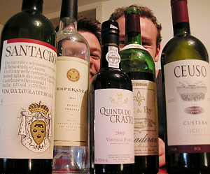

Viel Wein
6 von 6Schweinebäckli, Blauschimmeldegustation und einige Weine (Danke Onkel Matz, Martin und Gianni)

Schweinebäckli, Blauschimmeldegustation und einige Weine (Danke Onkel Matz, Martin und Gianni)

Montagsplausch Nr. 139. Der Abend hiess «3 Jahre montagsplausch».